Mentions légales
Travail étudiant
Clément Dumas
Antoine Fouilloux
Sources
https://cneos.jpl.nasa.gov/ca/
data.nasa.gov/Space-Science/Meteorite-Landings/gh4g-9sfh
Mentions légales
Travail étudiant
Clément Dumas
Antoine Fouilloux
Sources
https://cneos.jpl.nasa.gov/ca/
data.nasa.gov/Space-Science/Meteorite-Landings/gh4g-9sfh


Tu n'as rien senti ?
est passé proche de la Terre,
à
Pour nous il n’a même pas eu l’effet d’un courant d’air, mais mesure pourtant plusieurs dizaines de mètres de diamètre.
Il vient probablement de la ceinture d’astéroïdes qui orbite autour du Soleil comme la majorité de ses cousins.
Observons ensemble ce qui t’entoure.
- drift in space -
Tu peux scroller
Comme , chaque jour des astéroïdes ont la chance d’éviter de justesse la Terre. S’offrant tout de même un joli panorama sur notre Planète Bleue.

Observe ceux qui voyagent à ses côtés !
Hier
Aujourd'hui
Demain
Malheureusement, tous n’ont pas la chance de pouvoir continuer leur voyage spatial, comme , tombé sur Terre .
Sauras-tu le retrouver ?
Retrouve l'astéroïde tombé sur Terre
En , plus de kg de météorites sont tombés sur Terre.
2013
continue son voyage cosmique.
Elle repassera sans doute par ici dans quelques siècles.